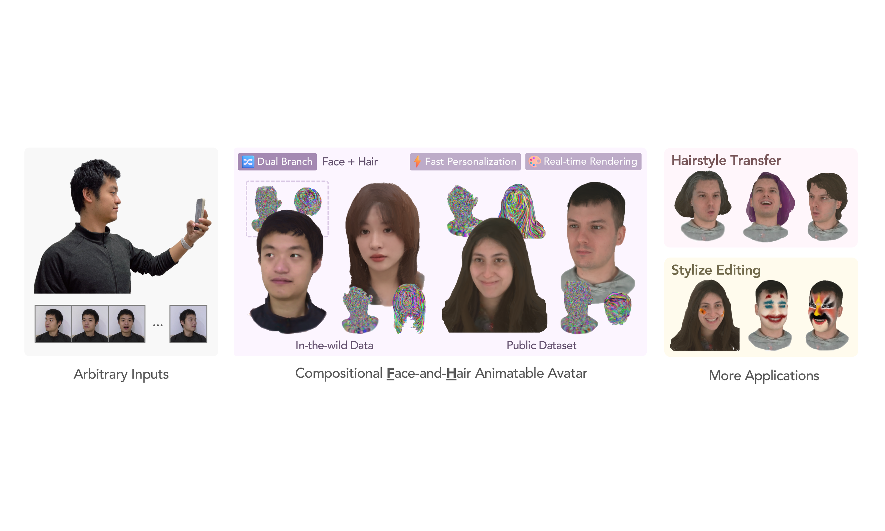
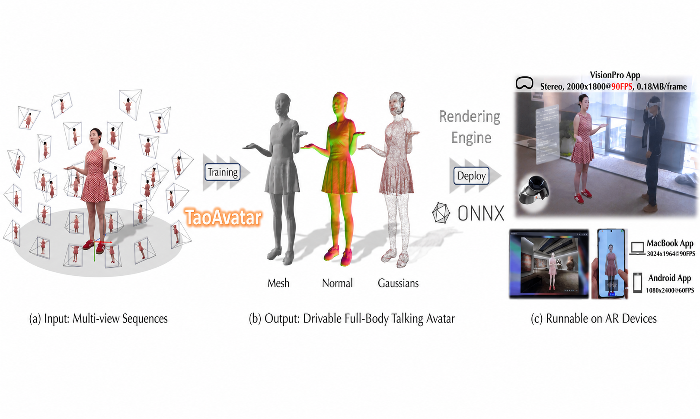
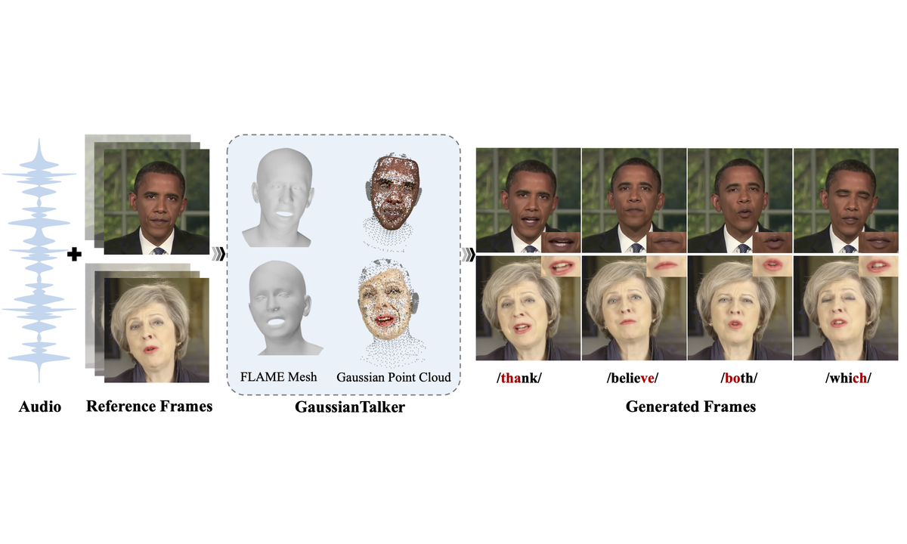
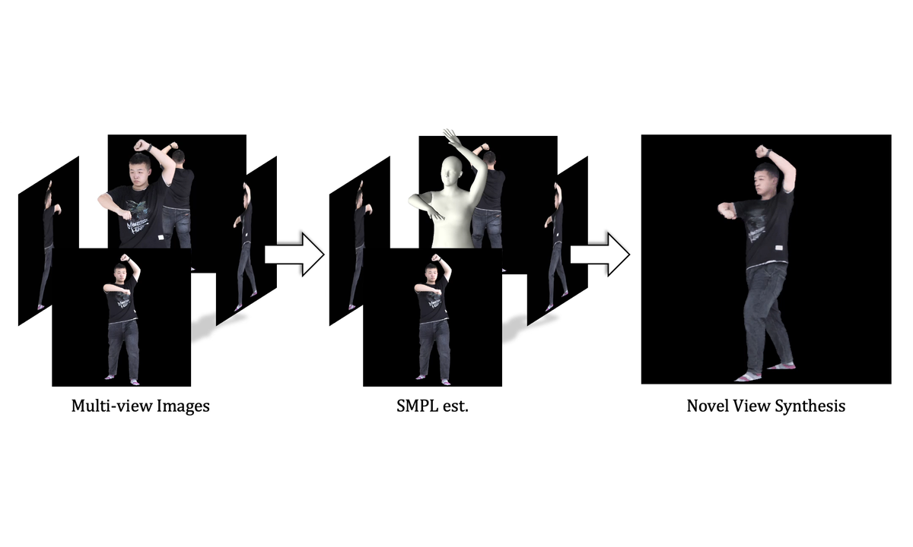
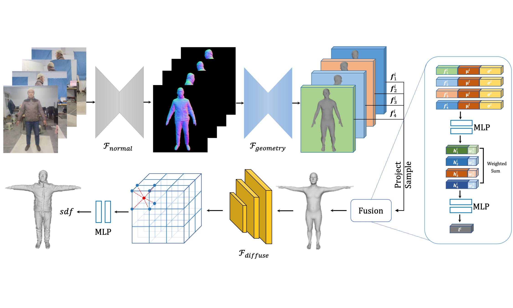
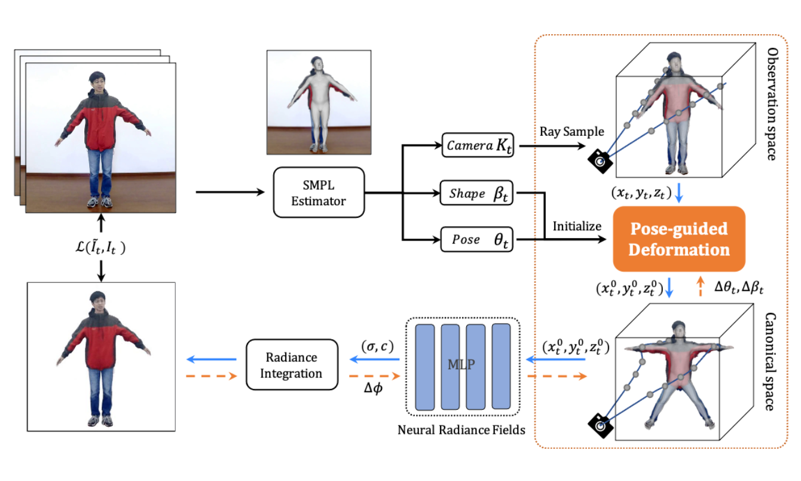

My name is Jianchuan Chen（陈建川）, and I am a Researcher at Alibaba Group. My research interests lie in 3D Digital Human Reconstruction and Neural Rendering, with a particular focus on real-time talking avatars, neural radiance fields (NeRF), and 3D Gaussian Splatting. I aim to develop high-fidelity, real-time digital human technologies for augmented reality and interactive applications.
I received my M.Eng. and B.E. from Dalian University of Technology, where I conducted my research under the supervision of Prof. Huchuan Lu (IEEE Fellow) at the IIAU-LAB.
🔥 News
- 2026: 🎉 Paper “FHAvatar: Fast and High-Fidelity Reconstruction of Face-and-Hair Composable 3D Head Avatar” accepted to CVPR 2026
- 2025: 🎉 Paper “TaoAvatar: Real-time Lifelike Full-body Talking Avatars” accepted to CVPR 2025 (Highlight)
- 2024: 🎉 Paper “GaussianTalker: Speaker-specific Talking Head Synthesis” accepted to ACM Multimedia 2024
📝 Publications

Yujie Sun, Zhuoqiang Cai, Chaoyue Niu, Jianchuan Chen, Zhiwen Chen, Chengfei Lv, Fan Wu
Proceedings of the IEEE/CVF Conference on Computer Vision and Pattern Recognition, 2026
Fast and high-fidelity reconstruction of face-and-hair composable 3D head avatars from few casual captures

Jianchuan Chen, Jingchuan Hu, Gaige Wang, Zhonghua Jiang, Tiansong Zhou, Zhiwen Chen, Chengfei Lv
Proceedings of the Computer Vision and Pattern Recognition Conference, 2025
Project arXiv Video Dataset Demo
Real-time lifelike full-body talking avatars for augmented reality using 3D Gaussian Splatting technology

GaussianTalker: Speaker-specific Talking Head Synthesis via 3D Gaussian Splatting
Hongyun Yu, Zhan Qu, Qihang Yu, Jianchuan Chen, Zhonghua Jiang, Zhiwen Chen, Shengyu Zhang, Jimin Xu, Fei Wu, Chengfei Lv, Gang Yu
Proceedings of the 32nd ACM International Conference on Multimedia, 3548-3557, 2024
Speaker-specific talking head synthesis leveraging 3D Gaussian Splatting for realistic animation

GM-NeRF: Learning Generalizable Model-based Neural Radiance Fields from Multi-view Images
Jianchuan Chen, Wentao Yi, Liqian Ma, Xu Jia, Huchuan Lu
Proceedings of the IEEE/CVF Conference on Computer Vision and Pattern Recognition, 2023
Generalizable model-based neural radiance fields learning from multi-view images

Jianchuan Chen, Wentao Yi, Tiantian Wang, Xing Li, Liqian Ma, Yangyu Fan, Huchuan Lu
European Conference on Computer Vision, 366-375, 2022
Human body reconstruction using implicit signed distance fields from multi-view images

Animatable Neural Radiance Fields from Monocular RGB Videos
Jianchuan Chen, Ying Zhang, Di Kang, Xuefei Zhe, Linchao Bao, Xu Jia, Huchuan Lu
arXiv preprint arXiv:2106.13629, 2021
Animatable neural radiance fields reconstruction from monocular RGB videos
🎖 Honors and Awards
- CVPR 2025 NeRSemble Benchmark Challenge: 1st Place Winner (Dynamic Novel View Synthesis)
- China3DV 2025 Live Demo: Best Technical Candidate Award (Top 3)
- CVPR 2022 Workshop SHARP Challenge: 1st Place Winner (€4,500 prize)
- ECCV 2022 Workshop WCPA Challenge: 3rd Place Winner
- ACM-ICPC Asian Regional Contests (2017-2018): 2 Silver Medals, 2 Bronze Medals; National Invitational Silver Medal
📖 Educations
- M.Eng. in Information and Communication Engineering, Dalian University of Technology
- Sep 2020 - Jun 2023
- B.Eng. in Computer Science and Technology, Dalian University of Technology
- Aug 2016 - Jun 2020
💻 Internships
- Huawei (Jun 2022 - Oct 2022)
- 3D head avatar algorithms, face detection, and 3DMM-based avatar driving
- Tencent AI Lab (Jun 2020 - Jun 2021)
- 3D digital human generation and motion transfer with NeRF + SMPL